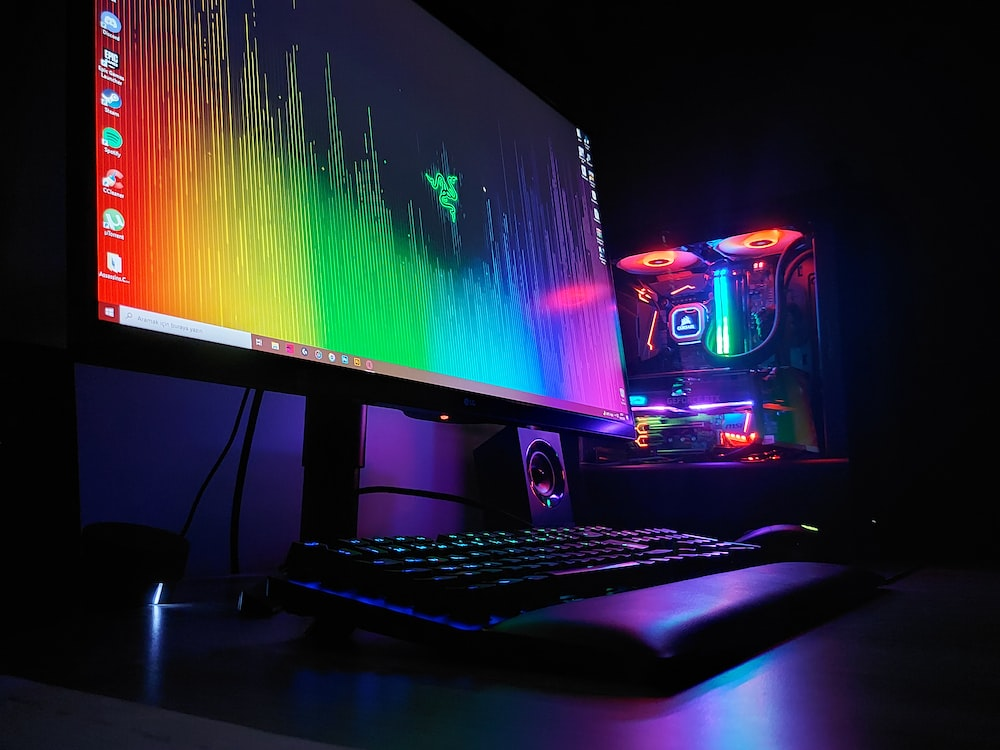

 La computadora suele ser el primer contacto de todas las personas con los videojuegos ya sea por un juego en sí o un anuncio además de que ofrece "emuladores" para juegar contenido de otras consolas
La Playstation fue intoducida el 3 de diciembre de 1994 en Japón, la consola pertenece a la marca Sony Interactive Entertainment y actualmente es una consola altamente elegida.
Creada por la empresa Nintendo, esta consola salió a la venta por primera vez en Japón el 21 de abril de 1989. Se suele elegir Nintendo porque presentó múltiples consolas portátiles para juegar y llevar a donde sea.